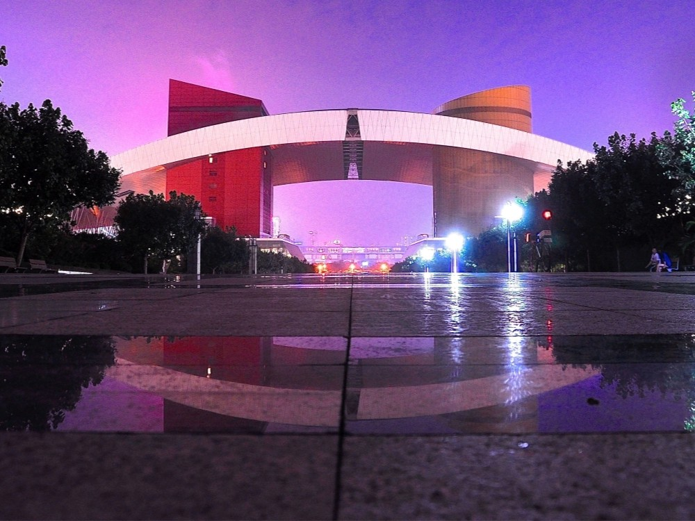
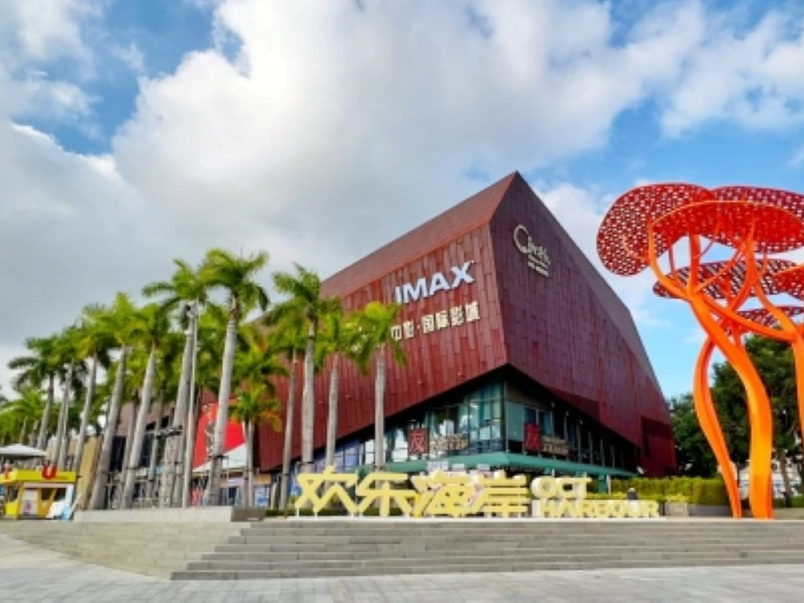

세계의 창 테마파크
세계의 경관, 역사 유적, 명승 고적을 복원해 놓은 미니어처 테마파크
주소 : No.9037 Shennan Road, Nanshan Districy EXit J Window of the World, Shenzhen 518053China
운영 시간: 9:30 ~ 21:30
가격 : 220위안
전화번호 : +86 755 2660 8000

선전 환러구
디즈니랜드와 비슷한 콘셉트의 중국 토종 프렌차이즈 테마파크
주소 : Overseas Chinese Town, Nan Shan District, Shenzhen 518074 China
영업시간 : 09:30 ~ 22:00
가격 : 240위안
전화번호 : +86 755 2694 9184

연화산 공원
선전의 상업중심지구가 한눈에 내려다보이는 동산 위의 시민공원
주소 : Hongli Road, Futian District, Shenzhen 518028 China
영업시간 : 06:30 ~ 23:00
가격 : 무료
전화번호 : +86 755 8306 7950

OCT 하버
인공호수와 운하를 중심으로 쇼핑몰과 호텔, 레스토랑 등이 들어서 있는 복합엔터테인먼트 단지
주소 : No.8 East of Baishi Road, Nanshan District, Shenzhen China
영업시간 : 10:00 ~ 22:00 (금,토 ~ 22:30)
가격 : 무료
전화번호 : +86 755 8612 2311